The store was built but the visual direction got rejected
The e‑commerce store had already been developed, but the client wasn't satisfied with its colors or overall presentation. He wanted a more professional visual identity, one that felt cohesive and better reflected the brand.
The challenge was to establish a clearer visual direction without rebuilding the store from scratch.
Visual Direction & Brand Alignment
- Communicated directly with the client in a WhatsApp group, reviewed shared materials, and studied premium fashion and accessories stores.
- Developed four alternative color directions with accompanying website concepts and recommended option four.
- Developed a new logo concept that the client approved.
- Prepared and adapted visual assets across product imagery, website images, layouts, buttons, and typography while preserving the jewelry products.
- Collaborated with a developer to implement the approved direction in the existing store.
Storefront Build & Implementation
- Original e‑commerce website architecture and storefront built by developers prior to my involvement.
- Developer collaborated on implementing the approved visual system within the existing e‑commerce store.
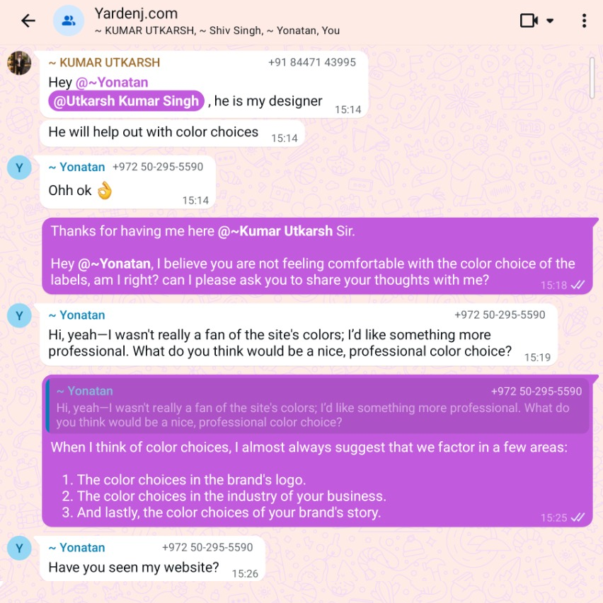
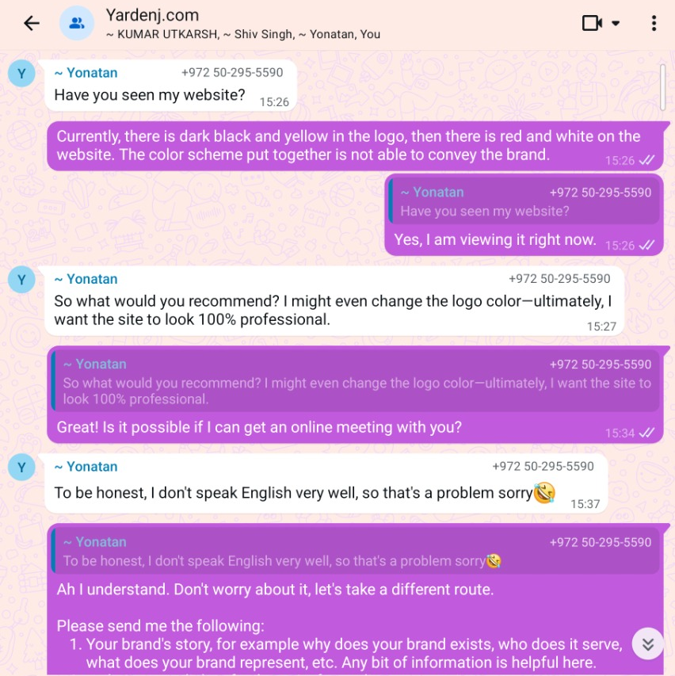
Started with the brand, not just the colors.
I began by reviewing the brand materials and speaking directly with the client to understand his concerns and expectations. I also looked at other premium fashion and accessories stores to explore how different visual directions could position Yarden.
My approach considered three things: the existing logo, the conventions of the jewelry and accessories market, and the personality of the brand itself.
Four palettes. Four possible directions.
Rather than settling on a color scheme immediately, I developed four distinct palette options and prepared accompanying website concepts to make each direction easier to evaluate.
The options explored different expressions of the brand, from understated sophistication to a bolder, more expressive form of luxury. This allowed the client to compare the directions in context rather than judge color swatches alone.
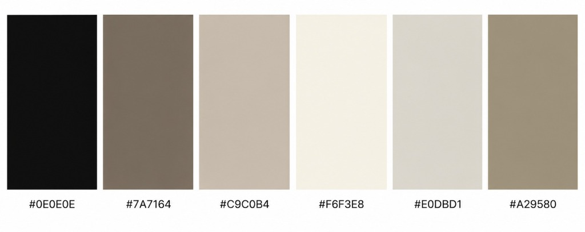
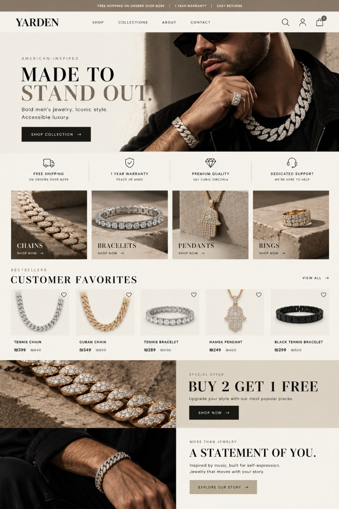
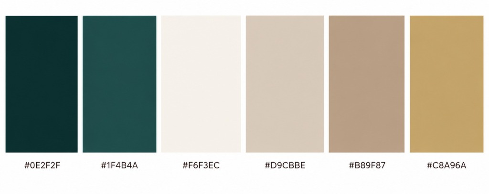
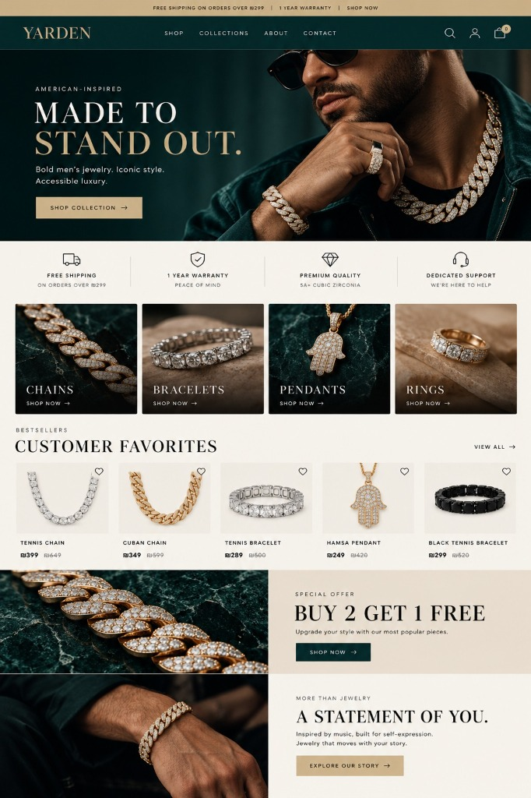
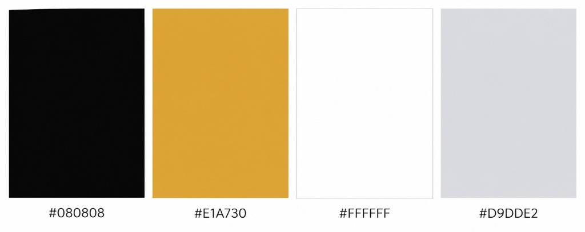
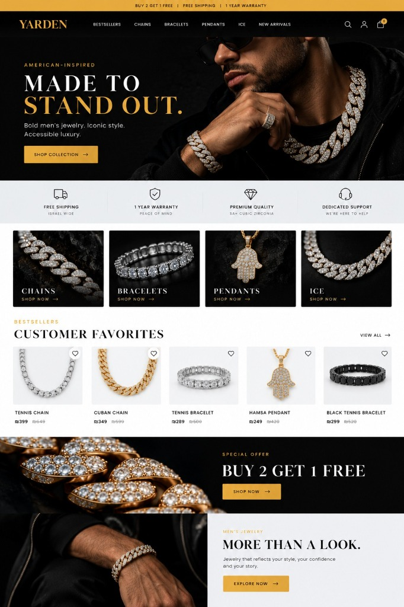
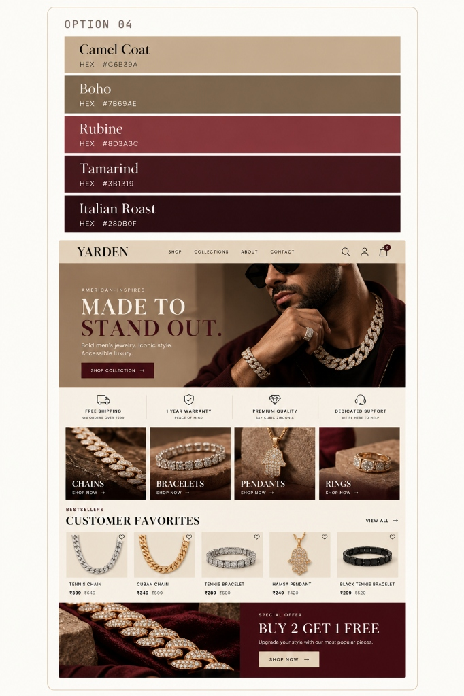
Quiet luxury or flashy luxury?
The key decision was not simply which colors looked best, but which direction felt most appropriate for Yarden.
I described the distinction between quiet luxury and flashy luxury, then recommended the fourth palette because I felt its stronger contrast and richer tones better reflected the brand's bold, statement-making identity.
The client agreed and explicitly selected option four.
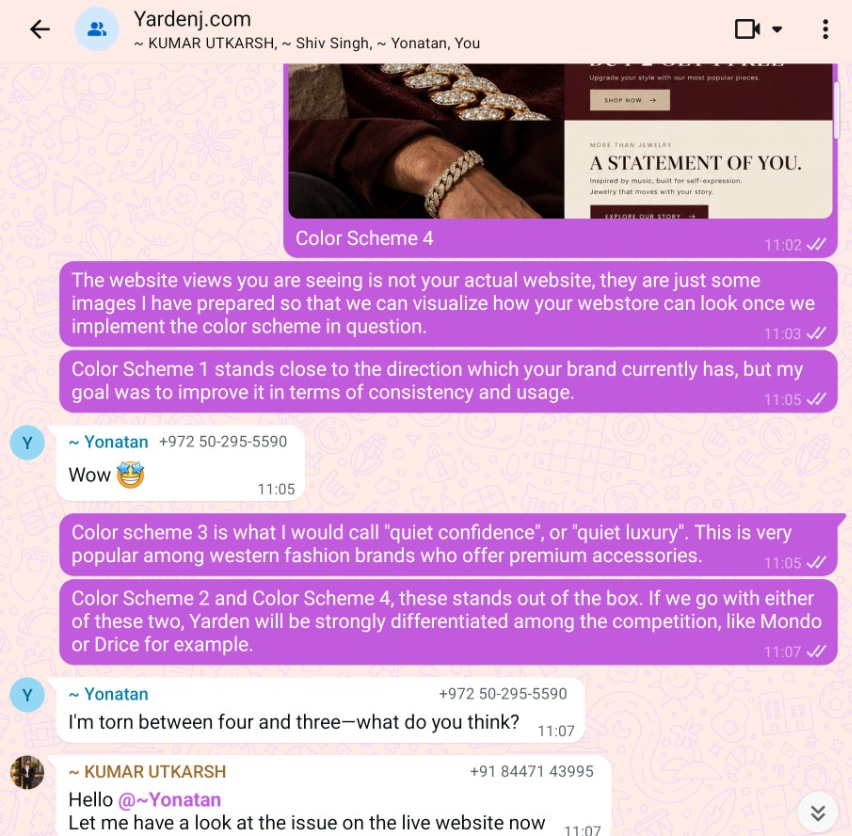
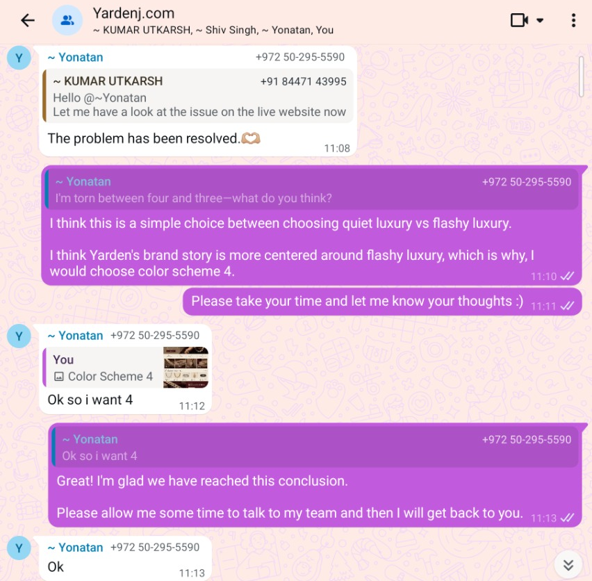
Extending the direction beyond color.
Once the client selected Option 4, I extended the direction beyond color. I developed a new logo concept that the client approved, prepared and adapted imagery for the store, and worked across the website's visual presentation - including product imagery, promotional visuals, and interface styling. I collaborated with the developer to bring the approved direction into the live experience.
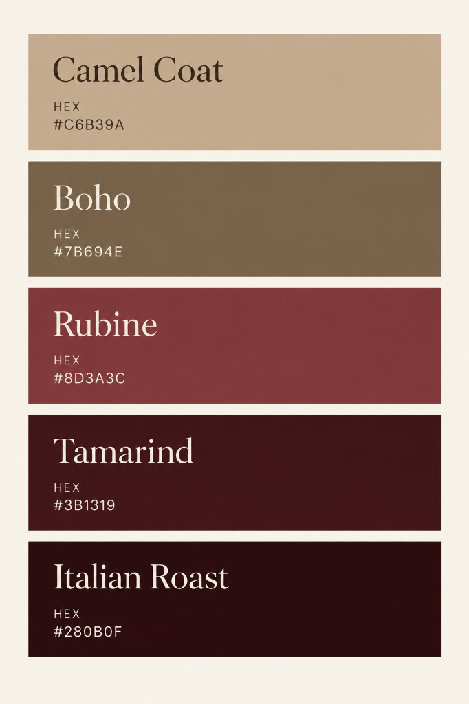
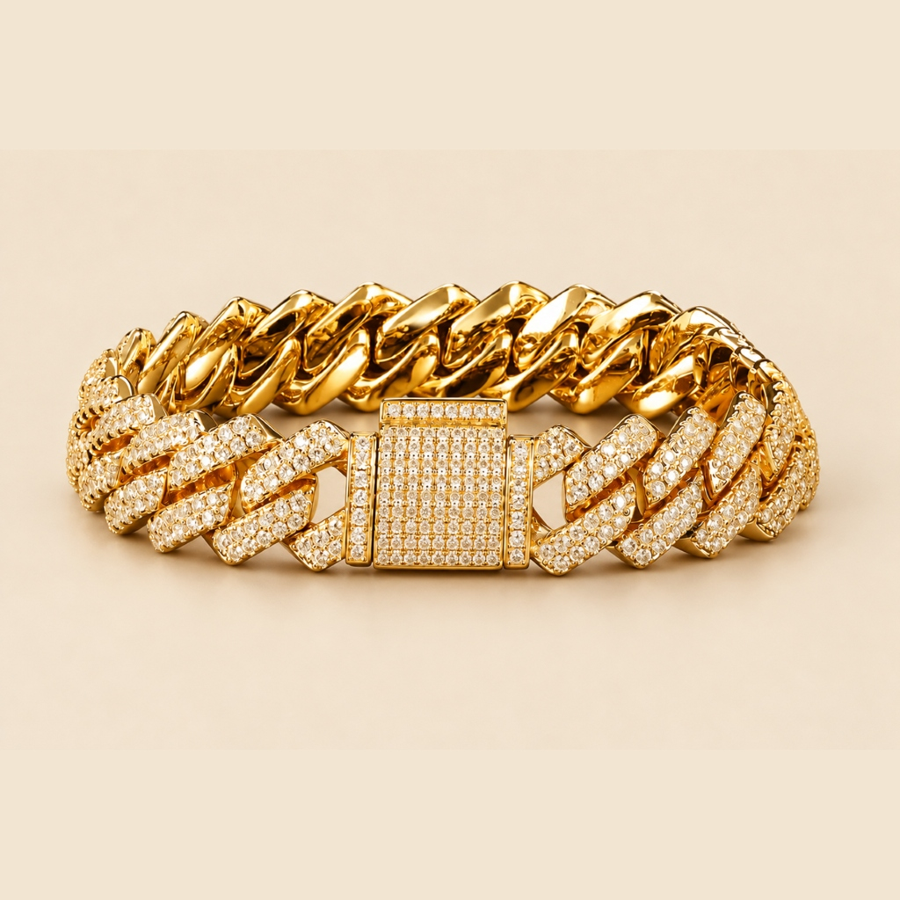
Bringing the Direction Into the Website.
After the client approved the selected color direction and logo concept, I prepared the visual assets and collaborated with the developer to bring the direction into the website. My contribution covered visual direction, logo design, imagery preparation, and website presentation.

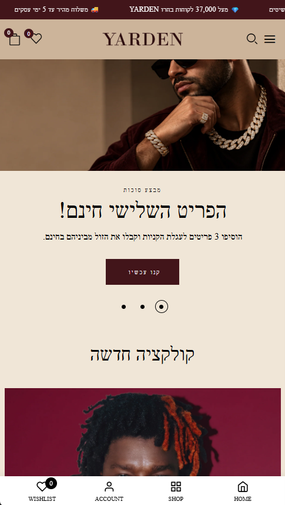
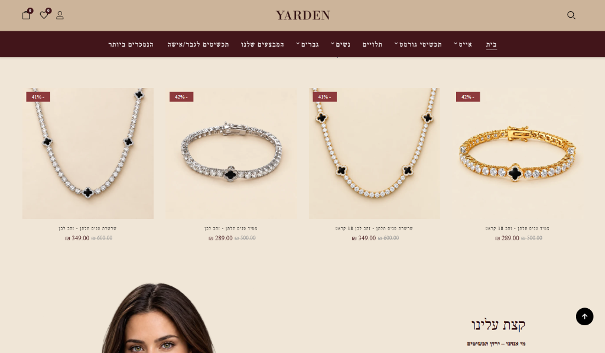
A direction the client could approve and move forward with.
The client selected the fourth color palette and approved the new logo concept. The additional visual-design work proceeded to implementation, and the website is now live.
The company also paid an additional $100 for the suggested brand direction implementation.
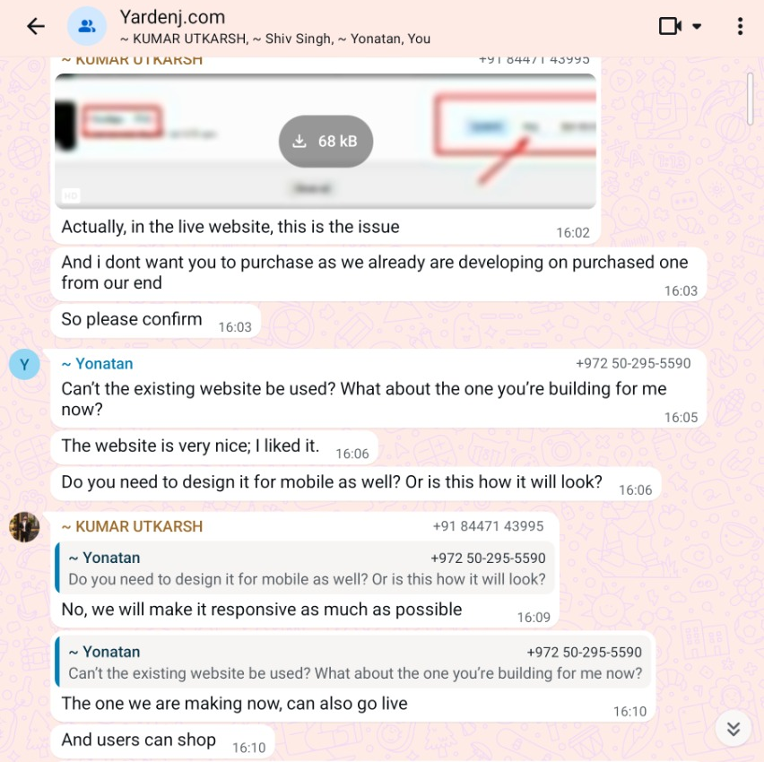
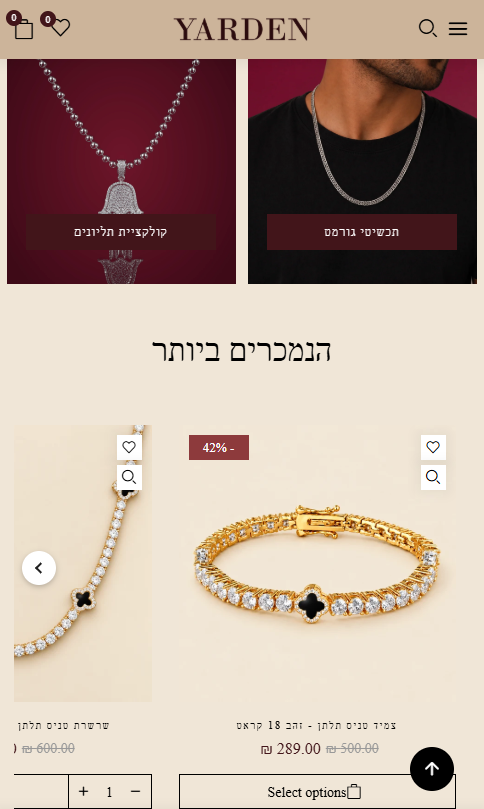